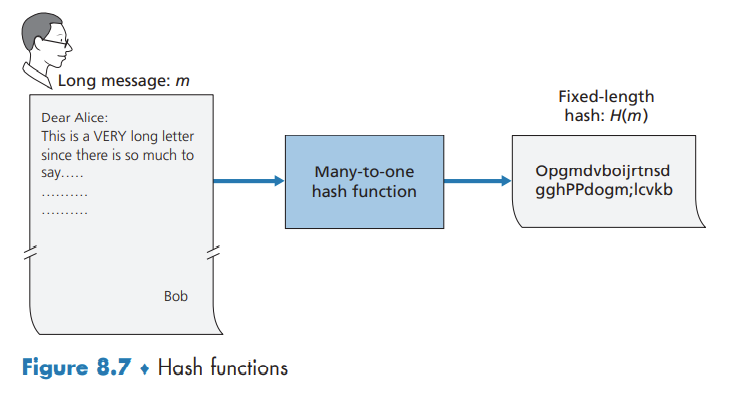
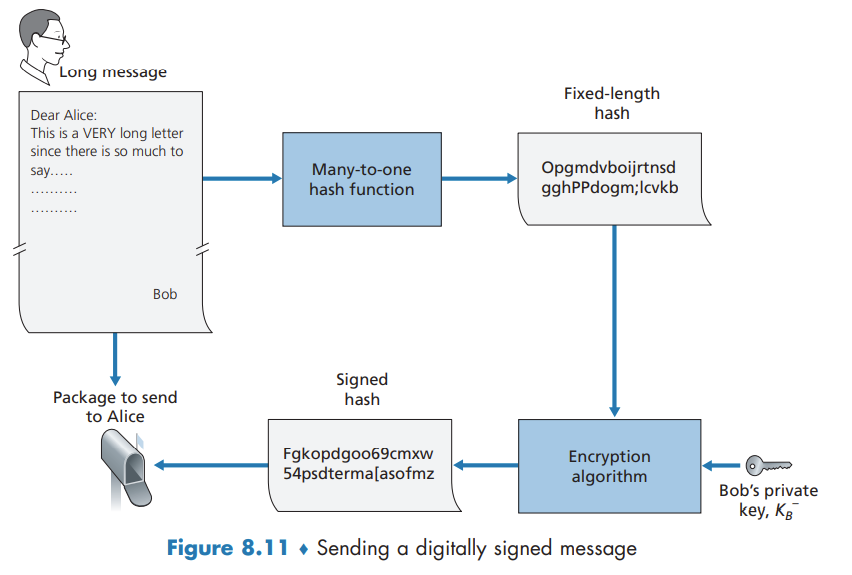
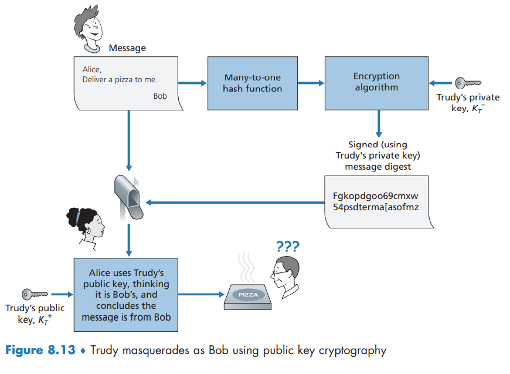
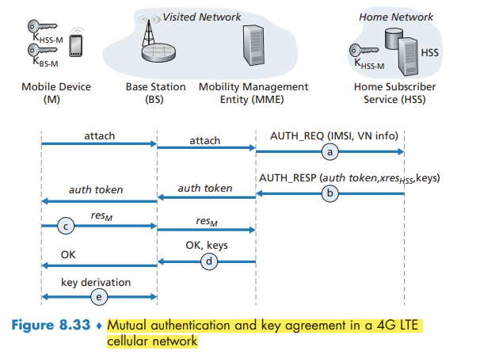

Security in Computer Networks
This contents of this chapter is part of the curriculum for TTM4100, except for the sections 8.4, 8.5.2, 8.7.2-8.7.5 and 8.9.2.
What is Network Security?
we can identify the following desirable properties of secure communication.
- Confidentiality. Only the sender and intended receiver should be able to understand the contents of the transmitted message.
- Message integrity. Alice and Bob want to ensure that the content of their communication is not altered, either maliciously or by accident, in transit.
- End-point authentication. Both the sender and receiver should be able to confirm the identity of the other party involved in the communication—to confirm that the other party is indeed who or what they claim to be.
- Operational security. Operational devices such as firewalls and intrusion detection systems are used to counter attacks against an organization’s network.
an intruder can potentially perform:
- eavesdropping—sniffing and recording control and data messages on the channel.
- modification, insertion, or deletion of messages or message content
Principles of Cryptography

In symmetric key systems, Alice’s and Bob’s keys are identical and are secret. In public key systems, a pair of keys is used. One of the keys is known to both Bob and Alice (indeed, it is known to the whole world). The other key is known only by either Bob or Alice (but not both).
Symmetric Key Cryptography
one can distinguish three different scenarios, depending on what information the intruder has.
- Ciphertext-only attack.
- Known-plaintext attack.
- Chosen-plaintext attack.
Block Ciphers
In a block cipher, the message to be encrypted is processed in blocks of k bits.
Cipher-Block Chaining
block ciphers typically use a technique called Cipher Block Chaining (CBC). The basic idea is to send only one random value along with the very first message, and then have the sender and receiver use the computed coded blocks in place of the subsequent random number.
Public Key Encryption

Suppose Alice wants to communicate with Bob. As shown in Figure 8.6, rather than Bob and Alice sharing a single secret key, Bob instead has two keys - a public key that is available to everyone in the world and a private key that is known only to Bob. Alice then encrypts her message, m, to Bob using Bob’s public key and a known encryption algorithm. Bob receives Alice’s encrypted message and uses his private key and a known decryption algorithm to decrypt Alice’s encrypted message.
Since Bob’s encryption key is public, anyone can send an encrypted message to Bob, including Alice or someone pretending to be Alice.
Message Integrity and Digital Signatures
To authenticate a message, one needs to verify:
- The message indeed originated from Alice.
- The message was not tampered with on its way to Bob.
Cryptographic Hash Functions
a hash function takes an input, m, and computes a fixed-size string H(m) known as a hash. A cryptographic hash function is required to have the following additional property:
- It is computationally infeasible to find any two different messages x and y such that H(x) = H(y).

The MD5 hash algorithm and the Secure Hash Algorithm (SHA-1) are in wide use today.
Message Authentication Code
To perform message integrity, in addition to using cryptographic hash functions, Alice and Bob will need a shared secret s. This shared secret, which is nothing more than a string of bits, is called the authentication key. Hash(message + secret) is called the message authentication code (MAC).
Digital Signatures
digital signing should be done in a way that is verifiable and nonforgeable.
To sign this document, Bob simply uses his private key.


Public Key Certification
An important application of digital signatures is public key certification, that is, certifying that a public key belongs to a specific entity.
for public key cryptography to be useful, you need to be able to verify that you have the actual public key of the entity
Binding a public key to a particular entity is typically done by a Certification Authority (CA), whose job is to validate identities and issue certificates. A CA has the following roles:
- A CA verifies that an entity (a person, a router, and so on) is who it says it is.
- Once the CA verifies the identity of the entity, the CA creates a certificate that binds the public key of the entity to the identity.

Securing E-mail
Secure E-Mail
we should consider which security features would be most desirable for them
- confidentiality
- sender authentication
- receiver authentication
Assuming that Alice knows for sure that the public key is Bob’s public key, this approach is an excellent means to provide the desired confidentiality. One problem, however, is that public key encryption is relatively inefficient, particularly for long messages. To overcome the efficiency problem, let’s make use of a session key
confidentiality is accomplished with digital signatures and message digests
Securing TCP Connections: TLS
You can identify that TLS is being used by your browser when the URL begins with https: rather than http.
TLS addresses these issues by enhancing TCP with confidentiality, data integrity, server authentication, and client authentication.
TLS is often used to provide security to transactions that take place over HTTP. However, because TLS secures TCP, it can be employed by any application that runs over TCP. TLS provides a simple Application Programmer Interface (API) with sockets, which is similar and analogous to TCP’s API.
The Big Picture
Almost-TLS (and TLS) has three phases: handshake, key derivation, and data transfer.
Handshake

Key Derivation
In principle, the master key (MS), now shared by Bob and Alice, could be used as the symmetric session key for all subsequent encryption and data integrity checking. It is, however, generally considered safer for Alice and Bob to each use different cryptographic keys, and also to use different keys for encryption and integrity checking. Thus, both Alice and Bob use the MS to generate four keys:
- EB = session encryption key for data sent from Bob to Alice
- MB = session HMAC key for data sent from Bob to Alice, where HMAC is a standardized hashed message authentication code (MAC) that we encountered in section 8.3.2
- EA = session encryption key for data sent from Alice to Bob
- MA = session HMAC key for data sent from Alice to Bo
Data Transfer
The HMAC is now a hash of the data plus the HMAC key MB plus the current sequence number.
Alice tracks Bob’s sequence numbers, allowing her to verify the data integrity of a record by including the appropriate sequence number in the HMAC calculation. This use of TLS sequence numbers prevents Trudy from carrying out a woman-in-the-middle attack, such as reordering or replaying segments.
TLS Record

A More Complete Picture
TLS Handshake
TLS allows Alice and Bob to agree on the cryptographic algorithms at the beginning of the TLS session, during the handshake phase. Additionally, during the handshake phase, Alice and Bob send nonces to each other, which are used in the creation of the session keys (EB, MB, EA, and MA). The steps of the real TLS handshake are as follows:
- The client sends a list of cryptographic algorithms it supports, along with a client nonce.
- From the list, the server chooses a symmetric algorithm (for example, AES) and a public key algorithm (for example, RSA with a specific key length), and HMAC algorithm (MD5 or SHA-1) along with the HMAC keys. It sends back to the client its choices, as well as a certificate and a server nonce.
- The client verifies the certificate, extracts the server’s public key, generates a Pre-Master Secret (PMS), encrypts the PMS with the server’s public key, and sends the encrypted PMS to the server.
- Using the same key derivation function (as specified by the TLS standard), the client and server independently compute the Master Secret (MS) from the PMS and nonces. The MS is then sliced up to generate the two encryption and two HMAC keys. Furthermore, when the chosen symmetric cipher employs CBC (such as 3DES or AES), then two Initialization Vectors (IVs)—one for each side of the connection—are also obtained from the MS. Henceforth, all messages sent between client and server are encrypted and authenticated (with the HMAC).
- The client sends the HMAC of all the handshake messages.
- The server sends the HMAC of all the handshake messages.
The server can compare this HMAC with the HMAC of the handshake messages it received and sent. If there is an inconsistency, the server can terminate the connection.
in TLS, nonces are used to defend against the “connection replay attack” and sequence numbers are used to defend against replaying individual packets during an ongoing session.
Connection Closure
having Bob send a TCP FIN segment to Alice. But such a naive design sets the stage for the truncation attack whereby Trudy once again gets in the middle of an ongoing TLS session and ends the session early with a TCP FIN.
The solution to this problem is to indicate in the type field whether the record serves to terminate the TLS session.
Network-Layer Security: IPsec and Virtual Private Networks
The IP security protocol, more commonly known as IPsec, provides security at the network layer. IPsec secures IP datagrams between any two network-layer entities, including hosts and routers.
many institutions use IPsec to create virtual private networks (VPNs) that run over the public Internet.
IPsec provides mechanisms for all these security services, that is, for confidentiality, source authentication, data integrity, and replay-attack prevention.
IPsec and Virtual Private Networks (VPNs)
Instead of deploying and maintaining a private network, many institutions today create VPNs over the existing public Internet. With a VPN, the institution’s inter-office traffic is sent over the public Internet rather than over a physically independent network. But to provide confidentiality, the inter-office traffic is encrypted before it enters the public Internet.

the payload of the IPsec datagram includes an IPsec header, which is used for IPsec processing; furthermore, the payload of the IPsec datagram is encrypted.
Securing Wireless LANs and 4G/5G Cellular Networks
Authentication and Key Agreement in 802.11 Wireless LANs
critical security concerns that we’ll want an 802.11 network to handle:
- Mutual authentication. Before a mobile device is allowed to fully attach to an access point, the network will typically want to authenticate the device. Similarly, the mobile device will want to authenticate the network to which it is attaching.
- Encryption. Symmetric key encryption is used in practice, since encryption and decryption must be performed at high speeds.
We can identify four distinct phases to the process of mutual authentication and encryption-key derivation
- Discovery. the AP advertises its presence and the forms of authentication and encryption that can be provided to the mobile device. The mobile device then requests the specific forms of authentication and encryption that it desires
- Mutual authentication and shared symmetric key derivation. the device and the authentication server will use this shared secret along with nonces (to prevent relay attacks) and cryptographic hashing (to ensure message integrity) in authenticating each other.
- Shared symmetric session key distribution.
- Encrypted communication between mobile device and a remote host via the AP.
Mutual Authentication and Shared Symmetric Session Key Derivation
Wired Equivalent Privacy (WEP) contained a number of serious security flaws.
At the heart of WPA is a four-way handshake protocol that performs both mutual authentication and shared symmetric session-key derivation.

802.11 Security Messaging Protocols

Authentication and Key Agreement in 4G/5G Cellular Networks

The 4G Authentication and Key Agreement (AKA) protocol consists of the following steps:
- Authentication request to HSS.
- Authentication response from HSS.
- Authentication response from mobile device.
- Mobile device authentication.
- Data plane and control plane key derivation.
Operational Security: Firewalls and Intrusion Detection Systems
Firewalls
A firewall is a combination of hardware and software that isolates an organization’s internal network from the Internet at large, allowing some packets to pass and blocking others

A firewall has three goals:
- All traffic from outside to inside, and vice versa, passes through the firewall.
- Only authorized traffic, as defined by the local security policy, will be allowed to pass.
- The firewall itself is immune to penetration.
Firewalls can be classified in three categories: traditional packet filters, stateful filters, and application gateways.
Traditional Packet Filters
A packet filter examines each datagram in isolation, determining whether the datagram should be allowed to pass or should be dropped based on administrator-specific rules. Filtering decisions are typically based on:
- IP source or destination address
- Protocol type in IP datagram field: TCP, UDP, ICMP, OSPF, and so on
- TCP or UDP source and destination port
- TCP flag bits: SYN, ACK, and so on
- ICMP message type
- Different rules for datagrams leaving and entering the network
- Different rules for the different router interfaces
Stateful Packet Filters
Stateful filters actually track TCP connections, and use this knowledge to make filtering decisions.
Application Gateway
what if the organization wants such privileged users to authenticate themselves first before being allowed to create Telnet sessions to the outside world? Such tasks are beyond the capabilities of traditional and stateful filters.
An application gateway is an application-specific server through which all application data (inbound and outbound) must pass.
Thus, the Telnet application gateway not only performs user authorization but also acts as a Telnet server and a Telnet client, relaying information between the user and the remote Telnet server.
Application gateways do not come without their disadvantages. First, a different application gateway is needed for each application. Second, there is a performance penalty to be paid, since all data will be relayed via the gateway. Finally, the client software must know how to contact the gateway when the user makes a request, and must know how to tell the application gateway what external server to connect to.